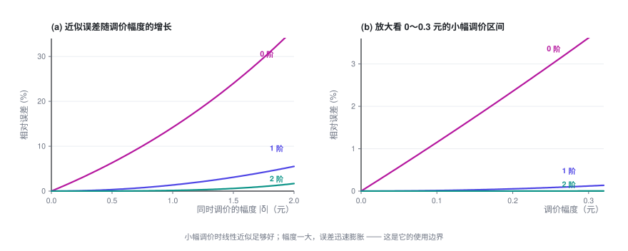

大规模定价优化
规模一上来，闭式解就不管用了。这一篇用一点精度换来可解：把需求模型线性化，交给求解器；同时讲清楚，这个近似在什么情况下会悄悄失准。
定价专题 · 第 4 篇 / 共 4 篇 · 阅读约 10 分钟
← 替代品的定价优化 · 专题目录 · 已是最后一篇 →
前情提要：上一篇给出了替代效应下最优解的显式形式，但它只在「一个用户群 × 一张清单」的规模上成立。这一篇处理真实规模，并老实交代整个专题没讲的东西。
本篇会用到的符号
| 符号 | 含义 |
|---|---|
| \boldsymbol\delta | 调价量向量，\delta_j 是候选项 j 的调价幅度 |
| Q(\mathbf p) | 总转化率（至少买一个），= 1 - q_0 |
| H | 海森矩阵，H_{ij} = \partial^2 Q/\partial p_i\partial p_j |
| \delta_{ij} | Kronecker 符号：i=j 时为 1，否则为 0 |
完整符号表见专题目录。
1. 泰勒展开做线性化
上一篇那个显式解看着很美，但它成立有前提：一个用户群 × 一张清单，而且只有量约束这种简单约束。
真实问题通常是：M 个用户群 × N 个候选项，决策变量 M \times N 个，外加一堆跨行、跨列、跨品类的约束。这时候显式解不再适用，得上运筹求解器。而求解器擅长线性、二次这类问题，不擅长 Logit 这种「指数套分式」的结构。
标准做法：在当前价格点做泰勒展开，把转化率线性化。
设当前价格 \mathbf{p}^{(0)}，调价量为 \boldsymbol\delta。总转化率（至少买一个）：
展开：
零阶项（当前值）：
一阶项（梯度）：由上一篇第 3 节，\frac{\partial Q}{\partial p_j} = -\frac{\partial q_0}{\partial p_j}，而
所以
二阶项（海森）：从 \frac{\partial Q}{\partial p_i} = -k_i\frac{e_i}{D^2} 出发，对 p_j 再求一次导：
代入 \frac{\partial e_i}{\partial p_j} = -k_ie_i\delta_{ij}（\delta_{ij} 是 Kronecker 符号，i=j 时为 1，否则为 0）和 \frac{\partial D}{\partial p_j} = -k_je_j：
再用 q_i = e_i/D、q_0 = 1/D 整理：
于是二阶项写成
这两个式子的结构值得看一眼：\delta_{ij} 那一项是「自己影响自己」，-2k_ik_jq_iq_j 那一项是「互相影响」。替代效应就藏在后一项里。
我用有限差分对上面的梯度和海森做了数值验证：梯度吻合到 10^{-11}，海森吻合到 10^{-5}（后者受限于差分精度本身）。
只保留到一阶，转化率就成了 \boldsymbol\delta 的线性函数，和量有关的约束随之都是线性的；目标函数也只保留一阶项的话，整个问题就化成一个线性规划（LP），可以直接交给成熟的求解器，第二篇那一堆跨单元约束也能直接加进去。这是工业界处理大规模定价最常见的做法。
2. 线性化能用到什么程度：必须知道它的边界
线性近似不是免费的。调价幅度一大，误差会迅速膨胀。

上图来自一个三候选项的算例（所有价格同方向调整）。层次很清楚：0 阶（完全不考虑价格变化，直接用当前转化率）误差最大；一阶近似在小幅调价时相当准；二阶的误差再低一个量级。
请务必用你自己的数据重画这张图，不要直接信任何人给的经验值 —— 误差大小完全取决于你的 k 有多大、清单有多长、份额分布多集中。做法很简单：
- 取一批真实的调价样本（最好来自随机调价实验，理由见第 4 节）
- 对每个样本，分别用 0 / 1 / 2 阶近似算出预测转化率
- 和真实转化率对比，按调价幅度分桶，统计 ME（平均误差，看有没有系统性偏差）、MAE（平均绝对误差，看整体准度）、RMSE（看长尾）
- 定出一个「可信调价区间」：误差可接受的最大幅度
然后用信任域迭代，把线性化用在它该用的地方：
Δ ← 初始步长
重复：
在当前价格 p 处展开，得到线性模型
解 LP，但额外限制 |δ| ≤ Δ # 只在可信范围内走
用【真实模型】评估这一步的实际收益
如果实际有改善： p ← p + δ；适当放大 Δ
否则： 缩小 Δ，重来
直到 Δ 足够小这样既享受了 LP 的求解效率，又不会因为一步迈太大而掉进近似失效的坑里。
3. 落地时会踩的坑
- IIA 假设。 MNL 有个著名的性质叫「无关选项独立性」：两个候选项的份额之比，与第三个候选项的存在与否无关。现实中这经常不成立（两个几乎一样的选项，本该主要互相抢量，而不是按份额比例从所有对手那里抢）。如果你的清单里有大量高度相似的候选，考虑 Nested Logit 或 Mixed Logit。
- 清单是动态的。 上面假设候选集固定。真实场景里排序、召回、库存都在变，清单本身就是个变量。定价和排序其实是耦合的，整个专题都没有处理这一层。
- q_0 极难估准。 「什么都没买」这件事通常没有明确的标签 —— 用户只是划走了。而 q_0 恰恰出现在几乎所有公式里，它估偏了，整套结论都会偏。这是这类模型在实践中最大的不确定性来源，务必单独做敏感性分析。
- 别拿一个用户群的最优解直接上线。 上面推的是一个用户群面对一张清单。真实系统要对海量用户群同时定价，还要考虑一个候选项在不同用户群清单里的价格是否需要一致（往往需要，出于公平性和舆情考虑）。这会引入跨用户群的一致性约束，是个更难的问题。
4. 整个专题没有覆盖的东西
整个专题反复说「假设你已经有了价格—需求关系」。这里把这些被跳过的部分老实列出来，免得读者以为照着推导就能直接上线。
4.1 怎么得到那条曲线（整个专题都没讲，而它是最难的）
这是整个链路里最容易翻车的一环。核心难点叫 内生性（endogeneity）：
历史数据里的价格不是随机的。它是人（或上一版策略）根据当时的需求情况定出来的。
举个典型的例子：需求旺盛时你涨价，需求疲软时你降价。那么在数据里，你会看到「价格高的时候成交量也高」。直接拿这批数据回归，会得出「价格越高，买的人越多」的荒谬结论（估出来的 k 是负的）——模型会告诉你「涨价能增量」。
常见的应对手段（每一个都值得单独一篇）：
- 随机调价实验：最干净，但有真金白银的成本，且需要业务方同意
- 工具变量（IV）：找一个只影响价格、不直接影响需求的变量（比如上游成本冲击）
- 断点回归（RDD）：利用规则造成的价格跳变
- 双重差分（DID）：利用分批上线造成的自然对照
另外还有：曲线用什么形式（Logit / 线性 / 半参数）、在多细的粒度上估（太细样本不够，太粗会抹平差异）、能外推多远（历史上从没定过的价格，模型说了不算）。
4.2 大规模求解的工程实现
这个专题里的算法都只是「原理上可行」。真到百万级决策变量：列生成、拉格朗日分解、ADMM、分布式求解、warm start、数值稳定性 —— 都是硬工程。
4.3 动态与博弈
整个专题讨论的都是静态、单期的问题：定完价、看结果，就结束了。真实世界里：
- 今天降价会改变用户对明天价格的预期（跨期效应）
- 竞争对手会跟进（博弈）
- 用户会学会等促销（策略性行为）
4.4 不确定性
这个专题把 q(p) 当作已知的确定函数。实际上它是估出来的，带着置信区间。在估计误差比较大的地方，最优解可能非常脆弱。稳健优化、贝叶斯定价，以及探索—利用（bandit）方法，都是为解决这个问题而生的。
4.5 多目标与合规
这个专题只优化利润。真实目标往往是「利润 + 份额 + 体验」的加权，而权重本身是个业务决策。差异化定价还有明确的法律和伦理边界，不同地区规则不同，这部分完全在专题范围之外。
专题小结
把四篇串起来：
- 一个价格：最优价 = 成本 + 加价项，加价项 = 转化率 ÷ 转化率下降速度。倒 U 曲线的顶点。
- 两个价格：只要不耦合，就是各算各的。对价格越敏感的，定价越低。
- N 个价格：无耦合时完全分解，N 再大也不难 —— 但这个解通常不能直接上线。
- 加约束：跨单元约束会把所有价格绑在一起，此时出现一个标量旋钮 \lambda（影子价格）。二分它，就能拿到最优解；而且它本身是个可以拿去做业务决策的数。
- 有替代效应：旋钮有了显式形式 —— 所有候选项的 mUE（多卖一单的净收益）= (p_j - c_j) - 1/k_j 必须被拉平到同一条水位线上。最优定价 = 统一水位 + 各自的天然加价空间 + 各自的成本。
如果只带走一句话，我希望是这句：
定价优化的本质，不是给每个对象单独找一个「好价格」，而是找到那条正确的水位线，然后让所有对象一起站上去。
定价专题 · 第 4 篇 / 共 4 篇
← 替代品的定价优化 · 专题目录 · 已是最后一篇 →